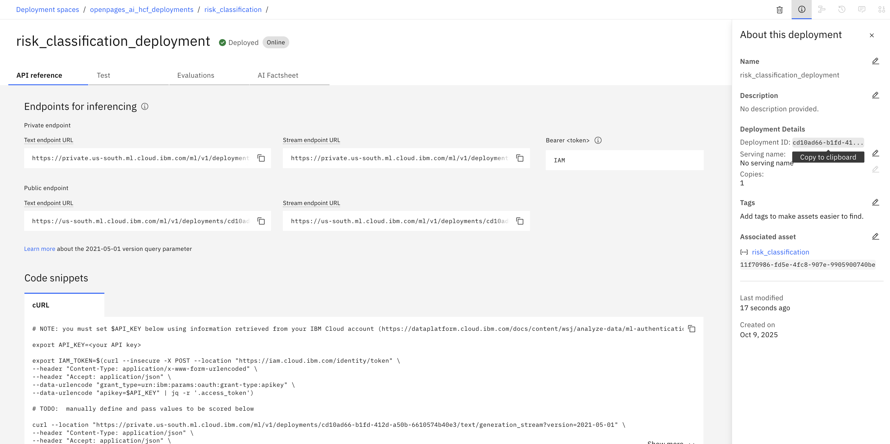

Lab 1.1: Creating and Deploying a model in watsonx.ai
1. Set Up and Deploy the prompt in Prompt Lab
-
Create a new Prompt Lab asset in your project.

-
Craft your prompt, with reference to what bits of information will be coming from the object you want the AI feature on. Add this as a variable in the prompt.

-
Save the prompt as a prompt template.

-
Promote asset to deployment space.

-
Deploy asset in deployment space.

-
Note down the deployment ID. We will need this in OpenPages. 